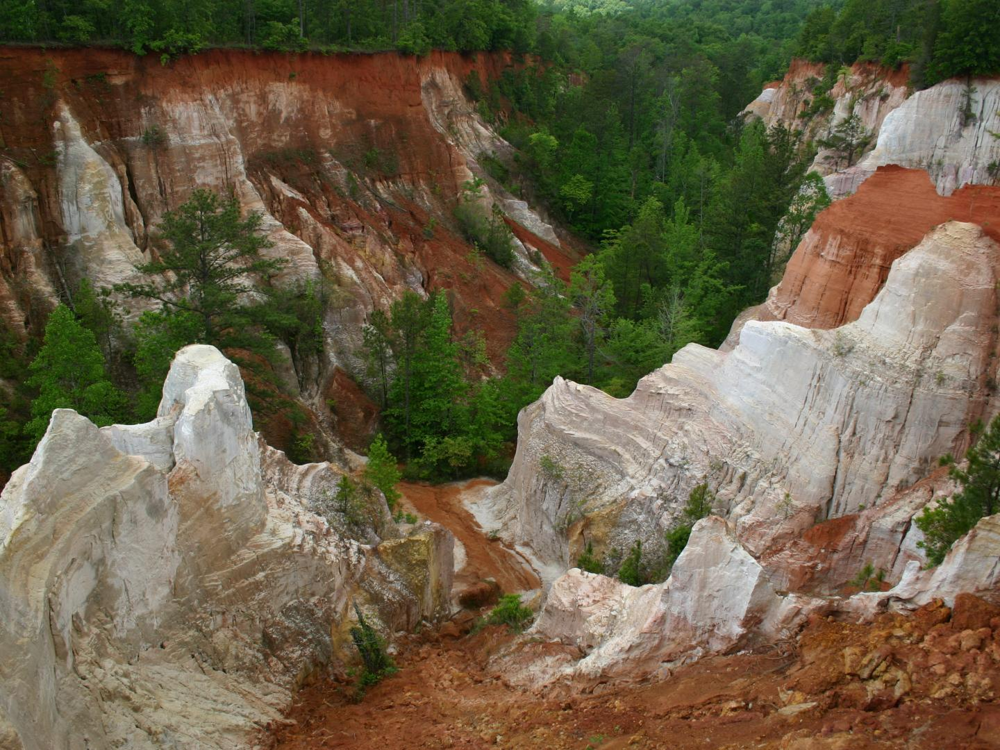
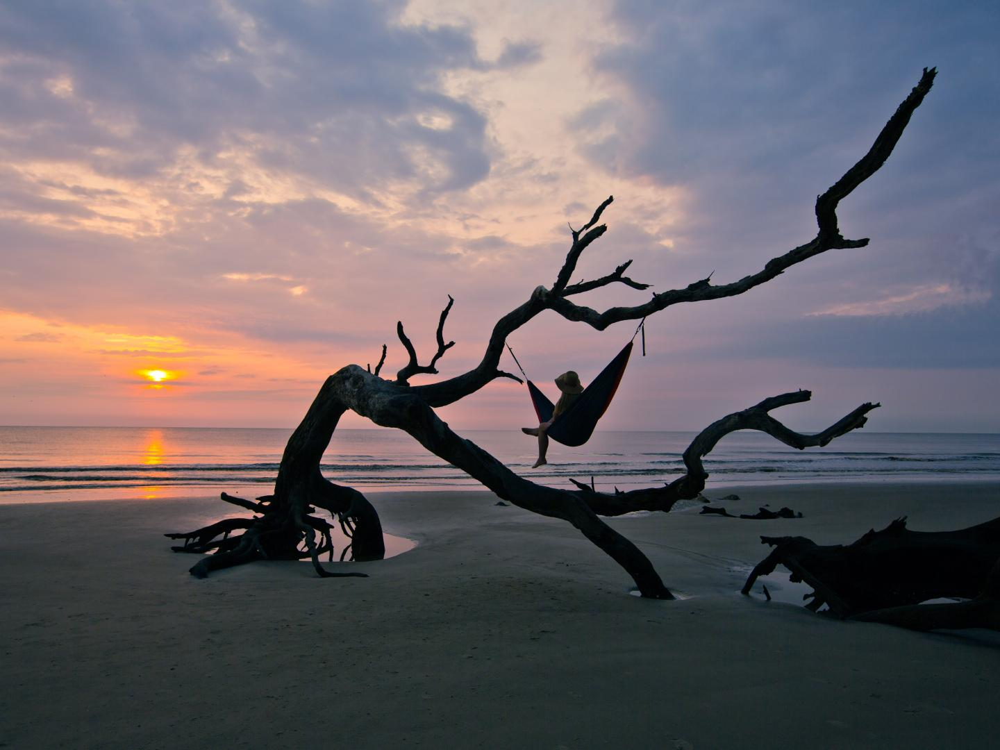
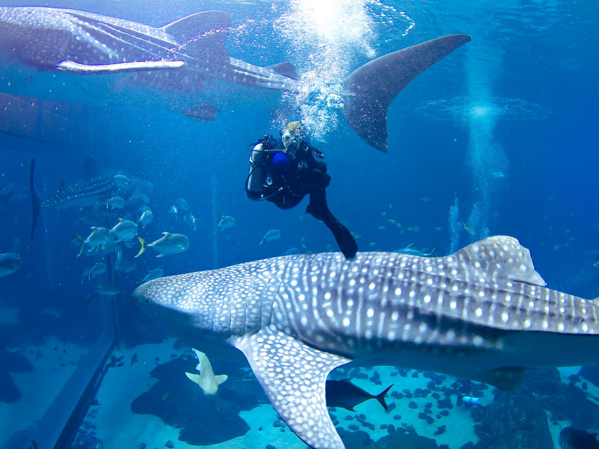
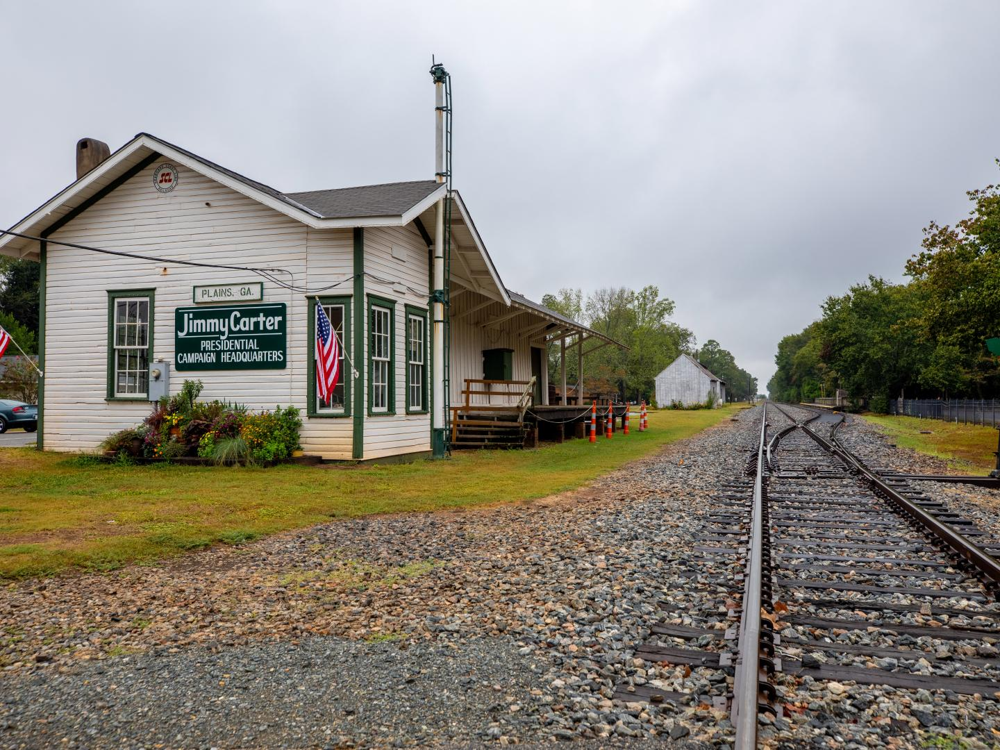
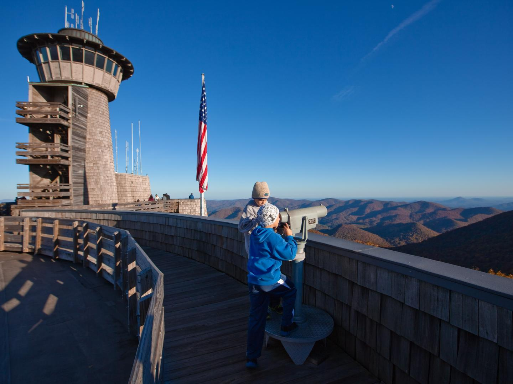
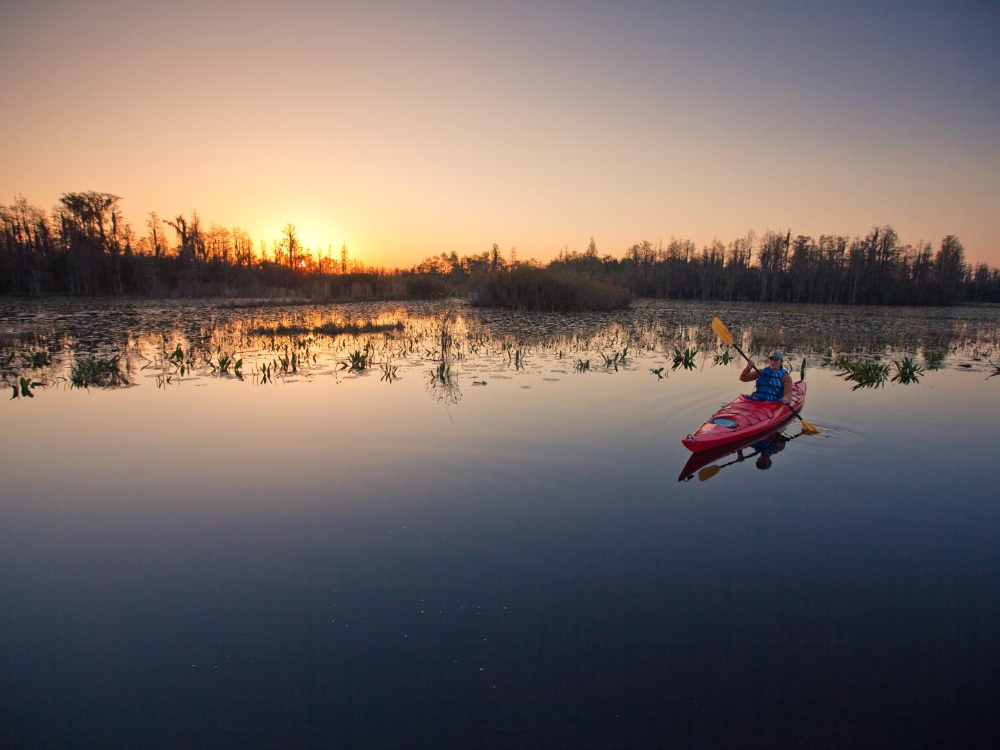
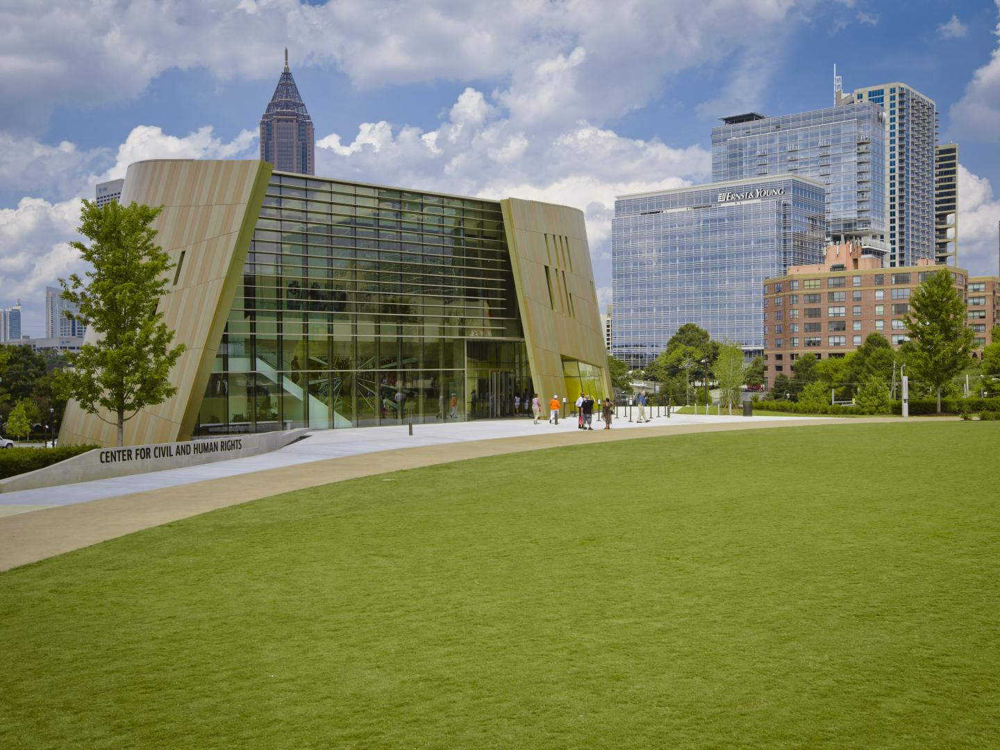
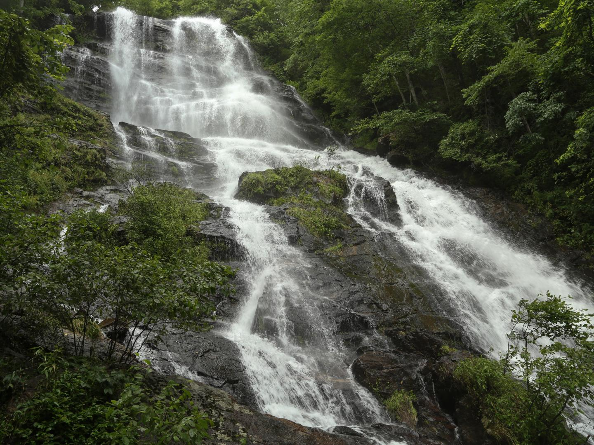
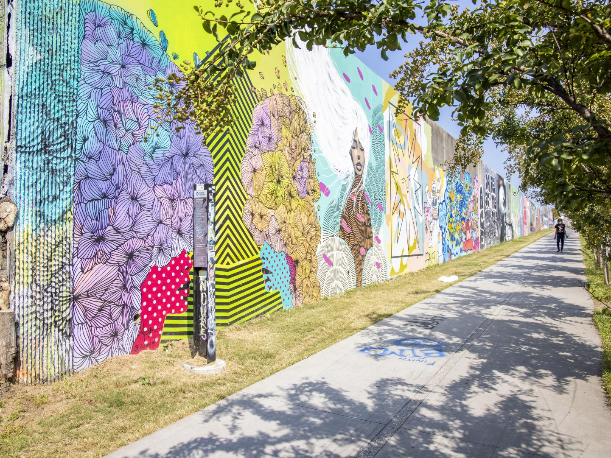
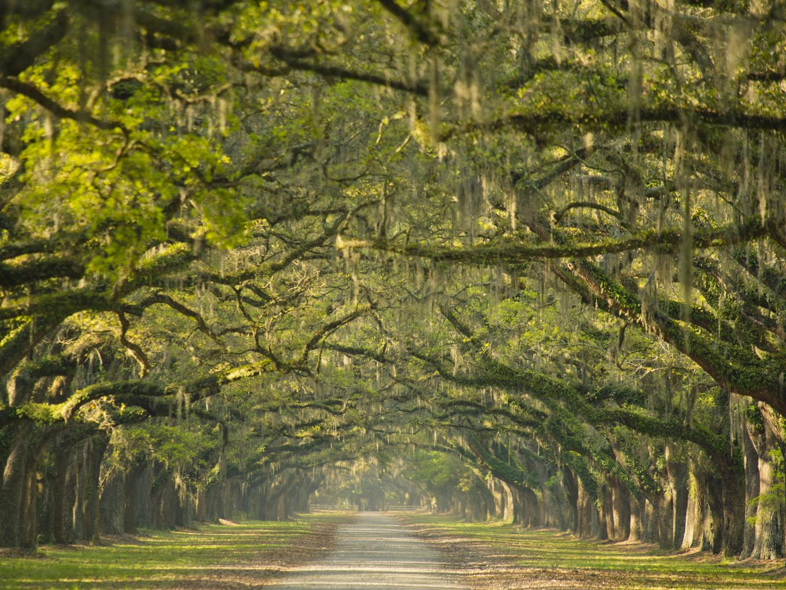

꼭 가봐야 할 곳
-

프로비던스 캐니언 주립
공원
조지아주 남서부의 프로비던스 캐니언 국립공원은 조지아주의 경이로운 7대 자연 중
하나이며, 깎아지른 절벽과 깊은 계곡, 무지갯빛 토양으로 놀라움을 선사합니다. 왜
‘리틀 그랜드 캐니언’이라는 별명이 붙었는지 알게됩니다. 이처럼 아름다운 자연 경
관은 1800년대 무분별한 농업 활동으로 인해 만들어진 것이긴 하지만, 오늘날에는
16km가 넘는 하이킹 트레일, 캠프장, 사진가들의 사랑을 받는 멋진 풍경을 자랑합
니다.
더 보기
-

드리프트우드 비치
조지아주의 160km 해안선을 따라 위치한 장벽 섬 중 하나인 제킬 아일랜드(Jekyll Island) 북쪽 끝에는 초자연적인 조각 정원이 있습니다. 모래와 바닷물이 지형을 계속 침식하여 만들어진 드리프트우드 비치(Driftwood Beach)는 어린이와 사진가 모두가 좋아하는 자연의 놀이터입니다. 오래 비바람을 맞은 참나무는 나무타기, 해먹 걸기, 인스타그램에 올릴 완벽한 사진 포착에도 제격입니다. 전문가의 팁: 방문 전 물때를 반드시 확인하세요.
더 보기
-

조지아 아쿠아리움
서반구 최대의 아쿠아리움인 조지아 아쿠아리움에서는 모두 어린이가 됩니다. 이곳에서는 전 세계로 떠나는 물 속 모험을 통해 해양 생태계와 생물의 서식지에 대해 더 잘 이해할 수 있습니다. 아쿠아리움에는 벨루가, 고래상어, 만타 가오리, 펭귄, 해달, 돌고래, 상어를 포함한 수천 마리의 놀라운 동물이 살고 있습니다. 일곱 개의 갤러리에서 더 자세히 관찰해 보세요.
더 보기
-

지미 카터 국립역사공원
자신이 나고 자란 조지아주 중부의 시골 마을 플레인스에 지금도 살고 있는 미국 39대 대통령 지미 카터(Jimmy Carter)와 관련된 주요 장소와 건물을 둘러보세요. 공원에는 그의 유년 시절에서 대통령 후보가 되기까지의 삶이 남아 있습니다. 지미 카터와 영부인 로잘린 카터(Rosalynn Carter)가 졸업한 조지아주 플레인스 공식 주립학교와 대통령 선거 본부 역할을 했던 기차 차고지, 그리고 그가 자란 농장을 직접 보실 수 있습니다.
더 보기
-

브래스타운 볼드 방문자 센터와 레크리에이션 구역
조지아에서 가장 높은 곳, 해발 1,458m의 채터후치-오코니 국유림(Chattahoochee-Oconee National Forest)으로 여행을 떠나 보세요. 1km 남짓 하이킹을 하다 보면 조지아주, 노스캐롤라이나주, 사우스캐롤라이나주, 테네시주의 4개 주가 보이고, 맑은 날에는 애틀랜타의 스카이라인을 360도로 볼 수 있는 전망대가 위치한 브래스타운 볼드(Brasstown Bald) 정상이 나옵니다. 내부에서는 영화를 감상하고 박물관의 대화형 전시를 체험할 수도 있습니다.
더 보기
-

오커퍼노키 국립야생보호구역
조지아주 남부 국경을 따라 자리한 경이로운 7대 자연 중 하나인 북미 최대의 흑수 늪지대에서 야외 활동을 즐겨보세요. 포크스톤 근처의 야생보호구역은 패들보드를 타기 딱 좋은 곳입니다. 웨이크로스 근처의 오커퍼노키 습지 공원(Okefenokee Swamp Park)에서는 새, 악어 등의 야생동물에게 더 가까이 다가갈 수 있고, 기차 및 보트 투어, 하이킹, 자연이 준비한 쇼도 즐길 수 있습니다. 별 보는 것을 좋아하신다면 보호구역 서쪽 끝의 국제 밤하늘 보호 공원인 스티븐 C. 포스터 주립공원(Stephen C. Foster State Park)에 들러 보세요.
더 보기
-

국립 민권 및 인권 센터
애틀랜타 다운타운의 문화 명소에서는 오늘날의 전 세계적인 인권 투쟁과 더불어 미국 민권 운동에 대해 알아보실 수 있습니다. 박물관 갤러리에는 강렬한 이미지, 매력적인 유물, 신랄한 스토리텔링이 결합되어 전시됩니다. 보이스 투 더 보이스리스 갤러리(Voice to the Voiceless Gallery)의 모어하우스 컬리지 마틴 루터 킹 주니어 컬렉션(Morehouse College Martin Luther King Jr. Collection)은 민권 운동 지도자 마틴 루터 킹 주니어의 논문과 개인 소지품을 순환 전시합니다.
더 보기
-

아미칼로라 폭포
조지아주 북부의 미시시피강 동쪽에는 미국에서 세 번째로 높은 폭포인 222m의 아미칼로라 폭포(Amicalola Falls)가 있습니다. 접근이 쉬워 피크닉을 즐기는 사람들과 등산객 모두 긴장을 풀고 마음이 안정되는 폭포 소리를 들을 수 있습니다. 인접한 주립공원과 같은 이름의 오두막에서는 야외 활동과 숙박을 제공합니다. 애틀랜타에서 북쪽으로 1시간 반만 이동하셔서 천혜의 자연으로 떠나 보세요.
더 보기
-

애틀랜타 벨트라인
미국에서 가장 크고 광범위한 도시 재개발 프로그램 중 하나인 애틀랜타 벨트라인(Atlanta BeltLine)에 준비된 가족 단위의 행사, 경험, 명소를 통해 도시의 숨겨진 보석들을 만나보세요. 대중에게 공개되는 7개의 멋진 공원과 4개의 트레일 구간을 거닐어 보시는 건 어떠신가요? 2030년까지 더 많은 곳이 공개될 예정이며, 공공 예술 작품, 재미있는 동네, 폰세 시티 마켓(Ponce City Market)과 같은 명소를 방문하실 수 있습니다. 자전거, 산책, 스케이트, 달리기, 물놀이, 쇼핑, 볼거리, 먹거리, 즐길 거리까지 마음이 가는 대로 즐겨보세요.
더 보기
-

웜슬로 주립사적지
역사적인 서배너 시의 중심에서 약간만 운전해 가면 서배너에서 가장 오래된 구조물이 있는 웜슬로 주립사적지(Wormsloe State Historic Site)가 나오는데, 이곳의 태비(부순 굴 껍데기, 석회, 모래, 물을 섞어 만든 콘크리트 반죽)로 만든 집 유적은 1745년으로 거슬러 올라갑니다. 스페인 이끼가 드리워진 400여 그루의 웅장한 참나무가 양쪽에 늘어선 진입로만으로도 사진가의 마음을 설레게 할 것입니다. 물론 조지아주 해안의 멋진 경치가 보이는 자연 산책로를 거닐 수도 있습니다.
더 보기
 미국 LGBTQ+
여행 가이드
미국 LGBTQ+
여행 가이드

 체험
서배너
체험
서배너
 체험
새해 전야를 화려하게 보낼 수 있는 미국의
놀라운 장소 9선
체험
새해 전야를 화려하게 보낼 수 있는 미국의
놀라운 장소 9선